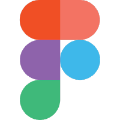
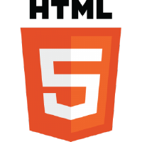
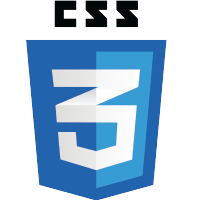

Who I Am in a Nutshell
I am a UX UI Designer based currently in Salt Lake City, Utah.
Engaging, beautiful layouts that help users are everything!
I love networking and speaking with new people, so don't hesitate to reach out!
Are you looking for someone to create effective and meticulously crafted designs? Check out my LinkedIn & Resume!
Some of My Skills
Always learning, always growing!
These are a few of the skills I come 'preloaded' with!
I love learning new tools and skills, and am always excited to see how I can better myself everyday!
I believe that rolling boulders don't grow moss, especially when it comes to constantly learning and adapting!




